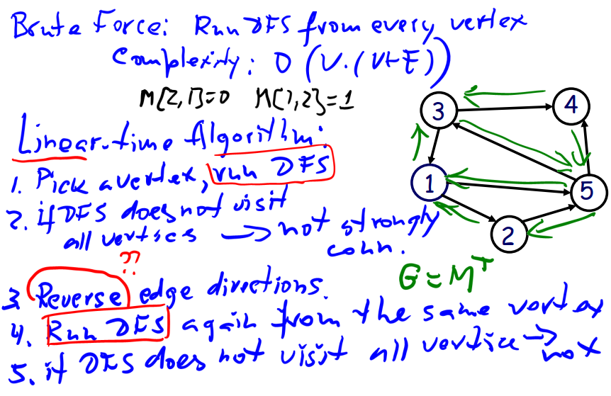
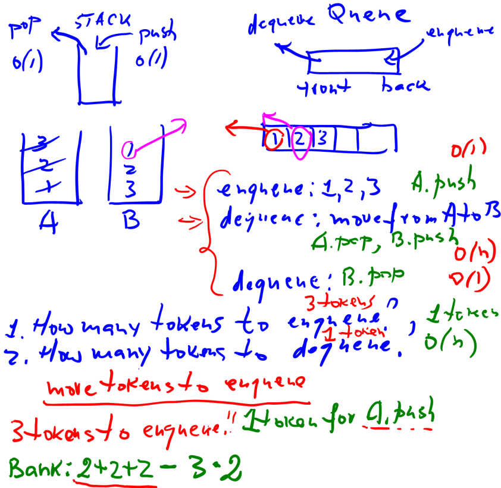
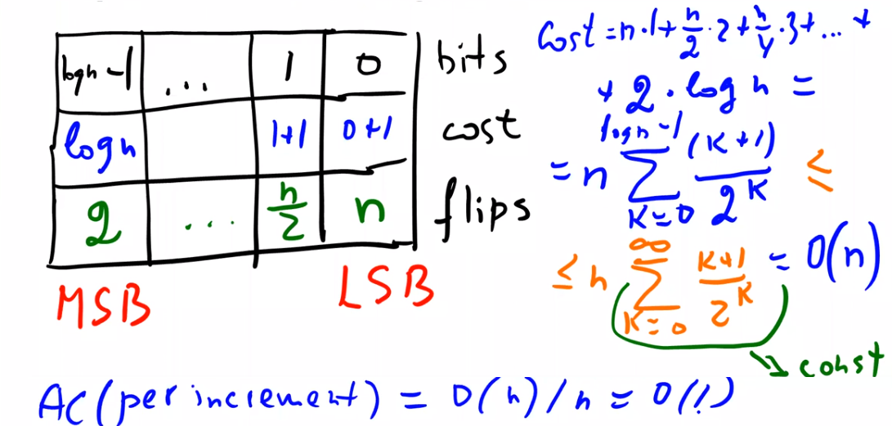

Amortized Analysis
In a sequence of operations, the worst-case time does not occur often in each oper ation; some operations may be cheap, some may be expensive. Therefore, a traditional worst-case per operation analysis Big O can give an overly pessimistic bound.
That why we need Amortized analysis.
There are generally three methods for performing amortized analysis:
- The aggregate method computes the upper bound T(n) on the total cost of n operations. The amortized cost is given by T(n)/n. In this method each operation will get the same amortized cost, even if there are several types of operations in the sequence.
- The accounting method (or the banker’s method) computes the individual cost of each operation. We assign different charges to each operation; some operations may charge more or less than they actually cost. The amount we charge an operation is called its amortized cost.
- The potential method (or the physicist’s method). We won’t use a potential method in this course
Unbounded Array
Binary Counter
Topological Sort
- T(n) counts the # of steps, where n is the input size.
- O big O, which c > 0 and real number , has , for all .
- Ω big Omega, which c > 0 and real number , has , for all .
- Θ big Theta, which > 0 and > 0 and real number , has , for all .
Hamiltonian Path
- finding the longest path in a directed acyclic graph (DAG)
Strongly Connected Graph
- how to prove a graph is a strongly connected graph

Review Q&A
What is the definition of the amortized cost using the aggregate method?
- Solution
- The aggregate method computes the upper bound T(n) on the total cost of n operations. The amortized cost is given by T(n)/n. In this method each operation will get the same amortized cost, even if there are several types of operations in the sequence.
(T/F) Amortized analysis is used to determine the average runtime complexity of an algorithm.
- False
- what is “average complexity”? that is ask you to compute the runtime complexity of a single operation when given n random input.(focus on this operation and compute all best case, bad case and so on. )
- “Amortized analysis” is another concept, actually this analysis is looking at the worst-case run time per operation, rather than per input, that’s the difference. (focus on a sequene of operation and in worst-case.)
(T/F) Compared to the worst-case analysis, amortized analysis provides a more accurate upper bound on the performance of an algorithm.
- True
- that’s what the definition says.
(T/F) The total amortized cost of a sequence of n operations gives a lower bound on the total actual cost of the sequence.
- False
- The aggregate method computes the upper bound T(n) on the total cost of n operations.
(T/F) Amortized constant time for a dynamic array is still guaranteed if we increase the array size by 5%.
- True
- In practice, programming languages, like JAVA and Python extend array capacity by multiple 1.6, which means increasing the array size by 60%. And ithey still can remain the constant runtime complexity. So if only increase 5%, it will work as well.
(T/F) If an operation takes O(1) expected time, then it takes O(1) amortized time.
- False
- “expected time” equals to “avgerage time”.
Suppose you have a data structure such that a sequence of n operations has an amortized cost of O(n * log n). What could be the highest actual time of a single operation?
- Solution
- less than O(n * log n)
- What is the worst-case runtime complexity of searching in an amortized dictionary?
- Solution
Exercise Q&A
You have a stack data type, and you need to implement a FIFO queue. The stack has the usual POP and PUSH operations, and the cost of each operation is 1. The FIFO has two operations: ENQUEUE and DEQUEUE. We can implement a FIFO queue using two stacks. What is the amortized cost of ENQUEUE and DEQUEUE operations?
- Solution

- Solution
We are incrementing a binary counter, where flipping the i-th bit costs i + 1. Flipping the lowest-order bit costs 0 + 1 = 1, the next bit costs 1 + 1 = 2, the next bit costs 2 + 1 = 3, and so on. What is the amortized cost per operation for a sequence of n increments, starting from zero?
- Solution

- Solution
We have argued in the lecture that if the table size is doubled when it’s full, then the amortized cost per insert is acceptable. Fred Hacker claims that this consumes too much space. He wants to try to increase the size with every insert by just two over the previous size. What is the amortized cost per insertion in Fred’s table?
- Solution
This table supports inserts as well as deletions. The protocol is the following: If an array is full, we double its size on insertion; if an array is 1/4 full, we halve the array size on deletion. Show that the amortized cost of insert and delete is 5.
- Solution
Suppose we perform a sequence of n operations on a data structure in which the i-th operation costs i if i is an exact power of 2 and 1 otherwise. Use aggregate analysis to determine the amortized cost per operation.
- Solution
Assume $n = 2^k$ operations, and these operation can be split into two parts.
- if i is an exact power of 2, $cost(i) = 2^i$, which $i \in k$.
part 1 cost = $\Sigma^{k}_{i=0} 2^i$
- if not, the remaining operations will cost 1.
part 2 cost = $n - k - 1$
So all cost is:
$Cost = \Sigma^{k}_{i=0} 2^i + n - k - 1$
$\quad \quad = 2^{k + 1} - 1 + n - k - 1$
$\quad \quad = 2 \cdot n + n - k - 2$
$\quad \quad = 3 \cdot n - k - 2$
$\quad \quad = 3 \cdot n - 2 - log_2 n$- Solution
So cost per operation = $\frac{3 \cdot n - 2 - log_2 n}{n} = O(3)$
Suppose we perform a sequence of n operations on a data structure in which the i-th operation costs i if i is an exact power of 4 and 1 otherwise. Use aggregate analysis to determine the amortized cost per operation.
- Solution
A MultiStack data structure has the usual POP and PUSH operations, and the cost of each operation is one unit. Additionally, it has MULTIPOP(k) operation that removes k recently pushed items. If k is bigger than the stack size, it removes all items. We wish to analyze the running time for a sequence of n PUSH, POP, and MULTIPOP operations, starting with an empty stack. What is the worst-case complexity for a sequence of n operations? What is the amortized cost per operation? Use the accounting method.
- Solution
Consider a singly linked list as a dictionary that we always insert at the beginning of the list. Now assume that you may perform any number of insert operations but will only ever perform at most one lookup operation. What is the amortized cost per operation?
- Solution
不建议Ctrl+CV转载，多看看得了。(Not recommend you to reprint this article, come over to my site more frequently is enough.)